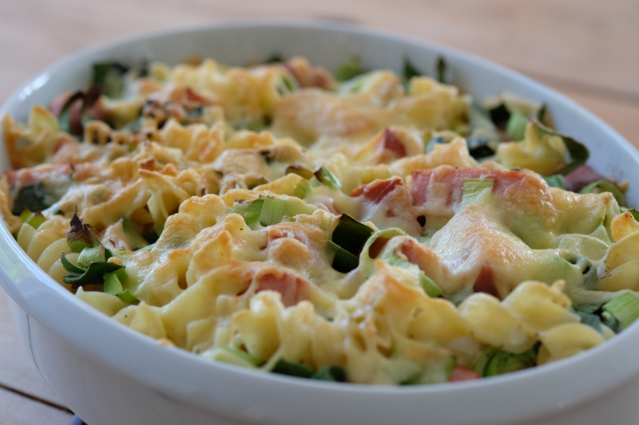

Gratinated Sausages and Macaroni

Go back to your childhood with this nostalgic plate of cheesy goodness
This is probably the one dish that every kid on the planet likes
Meaty sausages mixed with macaroni, ketchup and cheese, what else can you ask for?
Shit you need
- 400 grams of any large smoked sausages you can find
- 300 grams of uncooked macaroni
- Several fists of cheese
- 1 deciliter of ketchup
- Salt and pepper
- Butter for cooking
Shit you have to do
- Cook the macaroni according to the package.
- Fry the sausages in the butter in a pan, and add some pepper.
- Mix the cooked macaroni with the sausages and the ketchup, as well as with half of the
cheese in a bowl.
Season to taste.
- Put the mix in a buttered ovenproof pan and sprinke over the remaining cheese.
- Cook in the oven for 15-20 minutes or until beautifully gratinated at 220 degrees celcius